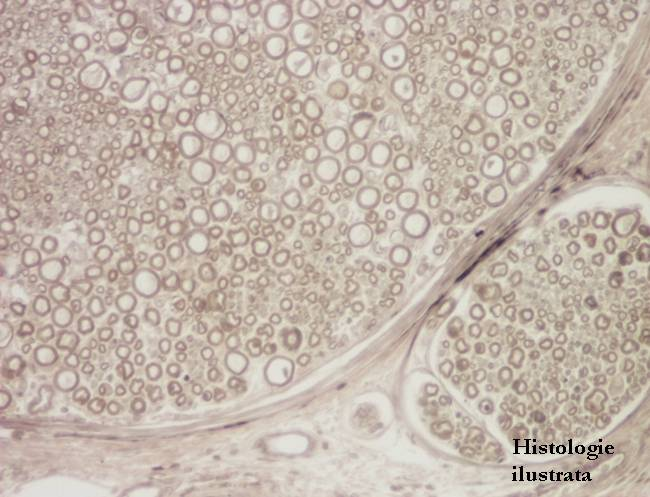
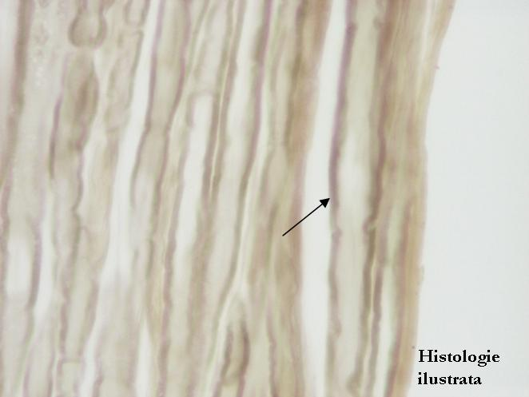
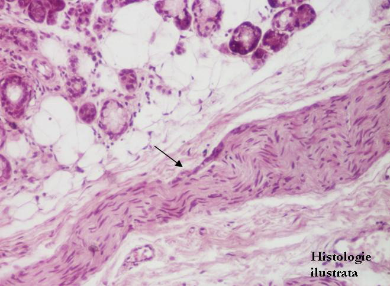

Cap.4 - Ţesutul nervos
4.3. Sistemul nervos periferic
Nervii periferici




Fig. 167 - Teacă de mielină - nerv periferic în secţiune transversală, acid osmic X 100
Fig. 168 - Teacă de mielină – nerv periferic, acid osmic X 400
Fig. 169 - Teacă de mielină - nerv periferic în secţiune longitudinală, acid osmic X 400,
Fig. 170 - Nerv periferic în secţiune longitudinală – glandă salivară, H.E. X 100


Fig. 171 - Nerv periferic în secţiune longitudinală – buză, T.S. X 200
Fig. 172 - Perinerv - nervi periferici în secţiune longitudinală, limbă, H.E. X 100
Fig. 173 - Nervi periferici – secţiune transversală, trahee, H.E. X 100
Fig. 174 - Nerv periferic – secţiune transversală, H.E. X 200